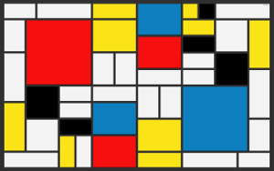
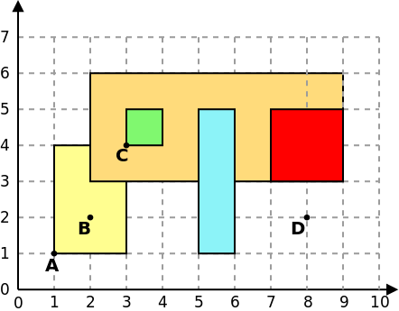

Para este problema pode assumir que o seu código terá acesso a uma classe Point assim definida:
// Uma classe simples para representar um ponto 2D
class Point {
int x, y;
Point() {
x = y = 0;
}
Point(int x0, int y0) {
x = x0;
y = y0;
}
public String toString() {
return "(" + x + "," + y + ")";
}
}

A sua tarefa é criar uma classe Rectangle para representar um rectângulo. A classe deverá ter como atributos (variáveis) dois pontos (da classe anterior), representando os pontos inferior esquerdo e superior direito do rectângulo e deverá ter os seguintes métodos:Um exemplo de utilização seria:
class TestRectangle {
public static void main(String[] args) {
Point a = new Point(1,1);
Point b = new Point(2,2);
Point c = new Point(3,4);
Point d = new Point(8,2);
Rectangle amarelo = new Rectangle(a, c);
Rectangle laranja = new Rectangle(2, 3, 9, 6);
Rectangle verde = new Rectangle(3, 4, 4, 5);
Rectangle azul = new Rectangle(5, 1, 6, 5);
Rectangle vermelho = new Rectangle(7, 3, 9, 5);
System.out.println("Perimetro do retangulo amarelo = " + amarelo.perimeter()); // 10
System.out.println("Perimetro do retangulo laranja = " + laranja.perimeter()); // 20
System.out.println("Area do retangulo amarelo = " + amarelo.area()); // 6
System.out.println("Area do retangulo laranja = " + laranja.area()); // 21
System.out.println("Ponto B dentro rectangulo amarelo? " + amarelo.pointInside(b)); // true
System.out.println("Ponto D dentro rectangulo amarelo? " + amarelo.pointInside(d)); // false
System.out.println("Retangulo verde dentro do laranja? " + laranja.rectangleInside(verde)); // true
System.out.println("Retangulo azul dentro do laranja? " + laranja.rectangleInside(azul)); // false
System.out.println("Retangulo vermelho dentro do laranja? " + laranja.rectangleInside(vermelho)); // true
}
}
Este exemplo corresponde à seguinte figura:

Deverá apenas submeter a classe Rectangle. O Mooshak irá criar várias instâncias da sua classe usando os construtores definidos e irá fazer uma série de testes aos métodos implementados por si.
É garantido que o construtor é chamado de forma correcta (ponto inferior esquerdo e ponto superior direito) e que todos os números são inteiros positivos que cabem num int.
Conteúdo de Fernando Silva (DCC/FCUP), migrado de dcc.fc.up.pt/~fds/aulas/EDados/2526/praticas/problems/prob186.html.